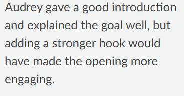

Teamwork Reflection
How the Team Functioned
Our team functioned by dividing responsibilities based on individual strengths and interests. Communication primarily occurred through GroupMe and a shared OneDrive folder, allowing team members to share research, coordinate tasks, and access project files. Throughout both projects, team members were responsible for contributing research, presentation materials, and written content. Working with the same team throughout the semester allowed us to better understand each other's strengths and establish effective communication and collaboration practices.
What Worked Well
Project 1
Overview
Project 1 focused on United Nations Sustainable Development Goal (UNSDG) 6, Clean Water and Sanitation, specifically Target 6.3. Our team researched membrane filtration as a technology used to improve water quality and reduce contamination. We explored how the technology operates, its benefits, and its potential role in helping achieve Target 6.3.
My Role
My responsibilities included researching membrane filtration, contributing to team discussions, and helping prepare the final presentation and deliverables.
Team Function
Our team communicated through a shared OneDrive folder and GroupMe and distributed work among members based on individual strengths. Team members regularly shared research and collaborated on the development of the presentation.
Results
Feedback from teammates on Project 1 was overwhelmingly positive. Several teammates noted my willingness to participate in team discussions, motivate others, and contribute to assignments. One teammate specifically highlighted my ability to listen to and provide feedback, while another noted that I frequently organized project materials and ensured files were uploaded to our shared OneDrive. These comments suggest that I played an active role in supporting team communication and organization.
The feedback also demonstrated that my teammates viewed me as dependable and easy to work with. Comments describing me as being "on top of her work" and having "no complaints" indicate that I consistently completed my responsibilities and maintained positive working relationships with the team.

Figure I. CATME peer feedback from Project 1.

Figure II. TA feedback from the Project 1 presentation.
Lesson Learned
One of the lessons my team learned from this project is to do at least one practice run before a presentation to make sure everything is covered in a timely manner and with few mistakes. I was the first person to speak in our presentation and forgot to prepare a hook to start the presentation. A practice run would have helped catch that mistake and would have made the transition between speakers be smoother.
Project 2
Overview
Project 2 expanded on our Project 1 research concerning membrane filtration and UNSDG 6. Our team collaborated on research, analysis, and presentation development while addressing more complex project requirements.
My Role
For Project 2, I researched membrane filtration applications and how the technology is implemented in real-world water treatment facilities. I also contributed to the stakeholder and ethical analyses used to develop our final recommendation.
Team Function
Our team continued to divide responsibilities based on individual strengths and maintain communication throughout the project. Because we had already worked together during Project 1, our coordination and understanding of team expectations improved.
Results
Project 2 feedback remained largely positive and continued to highlight my contributions to the team's success. One teammate described me as an outstanding team member and the MVP of the group, while another highlighted my role in organizing materials and contributing to the overall design of the project.
The feedback also identified an area for improvement. One teammate noted that my motivation appeared to decrease as the project progressed and referenced an instance where I thought I was muted during a group meeting and did not immediately respond. Although the majority of feedback was positive, this comment reminded me of the importance of remaining consistently engaged and maintaining active communication throughout a project.
Figure III. CATME peer feedback from Project 2.
Figure IV. TA feedback from Project 2 presentation.
Lesson Learned
For Project 2, I made sure to include a hook that would engage the audience at the beginning of my section of the presentation. This lesson came directly from the feedback and experience gained during Project 1. I also felt more confident transitioning between speakers because our team spent more time practicing and reviewing the presentation beforehand.
Summary
Overall, our team was successful because members consistently communicated, completed assigned responsibilities, and supported one another throughout both projects. CATME evaluations and teammate feedback indicated strong collaboration, organization, and contribution to team goals. These strengths allowed the team to successfully complete both projects while expanding our understanding of sustainable development, water treatment technology, and professional teamwork.
Improvements We Made
One improvement our team made between Project 1 and Project 2 was increasing our attention to preparation and quality review. After Project 1, we recognized that presentation transitions and overall organization could be improved through additional practice and coordination. For Project 2, we spent more time reviewing content before submission and discussing how each person's section fit into the overall presentation. As team members became more familiar with one another's work styles, task delegation and communication also became more efficient.
CATME Evaluation Results
CATME evaluations were conducted following both projects and provided insight into team performance across five dimensions:contributing to the team's work, interacting with teammates, keeping the team on track, expecting quality, and having relevant knowledge, skills, and abilities.
Project 1 Results
Project 1 ratings were strongest in contributing to the team's work, interacting with teammates, and having relevant knowledge, skills, and abilities, which all received ratings in the middle 4 range. Keeping the team on track and expecting quality received ratings in the low 4 range.
Project 2 Results
Project 2 ratings remained strong overall. Contributing to the team's work, interacting with teammates, and keeping the team on track were rated in the low 4 range, while expecting quality and having relevant knowledge, skills, and abilities were rated in the middle 4 range.
Analysis
The CATME results suggest that our team consistently collaborated well and contributed meaningfully to project work. The improvement in expecting quality from Project 1 to Project 2 reflects our increased attention to reviewing and refining deliverables before submission. Keeping the team on track remained an area for improvement throughout the semester, indicating that additional project management structures could have benefited the team.
Future Improvements
One area I would like to improve in future teams is maintaining visible engagement throughout the entire project. While peer feedback generally indicated that I was a strong contributor, one teammate noted that my motivation appeared to decrease as the project progressed. In future projects, I plan to communicate more proactively and ensure that my level of engagement is consistently visible to the team.
The teamwork readings also provided additional strategies that could have improved our team's performance. Reading 4 emphasized the importance of establishing clear expectations, accountability, and communication practices early in a project [1]. Reading 6 highlighted the value of identifying and addressing team issues before they become larger problems [2]. In future projects, I would encourage more frequent progress check-ins and earlier discussions about potential challenges. These practices could help keep projects on track while improving communication and overall team effectiveness.